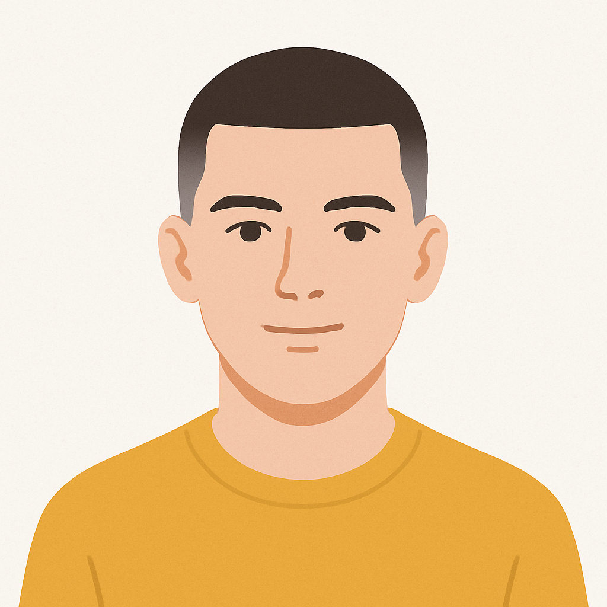
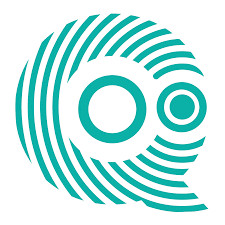

Sobre mí

Apasionado de la administración de sistemas, redes y la tecnología.
Técnico informático y en formación continua.
Grado Medio de Sistemas Microinformáticos y Redes
IES Sierra de Gador (Berja) 2022 - 2024Grado Superior de Administración de Sistemas Informáticos en Red
Primer año en: IES Al-Andalus (Almería)Segundo año en: 2024 -
Certificados
 CCNA: Introducción a las redes
2025
CCNA: Introducción a las redes
2025
 Fundamentos de Linux
2025
Fundamentos de Linux
2025
 Introducción a la Ciberseguridad
2025
Introducción a la Ciberseguridad
2025
Certificado Europass
2024
Prácticas en empresa

Quantasoft Praga
Marzo 2024 - Junio 2024 (3 meses)
Prácticas Erasmus en República Checa (Praga) con certificado Europass.

Diputación de Almería
3 semanas y 3 días
Prácticas en Diputación de Almería (España) en la nueva FP DUAL.